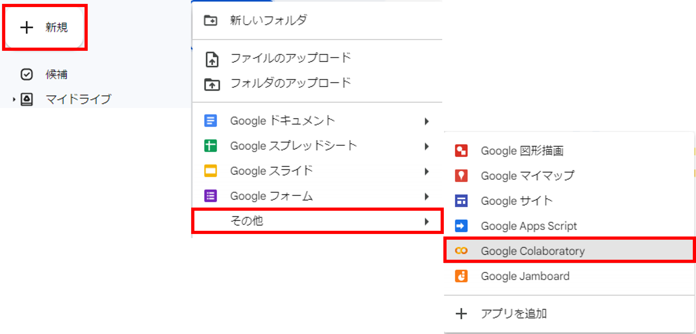
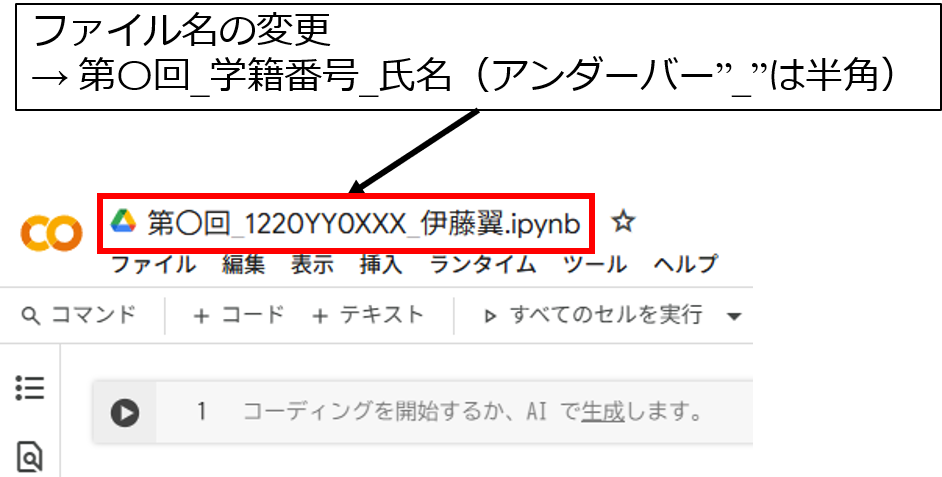
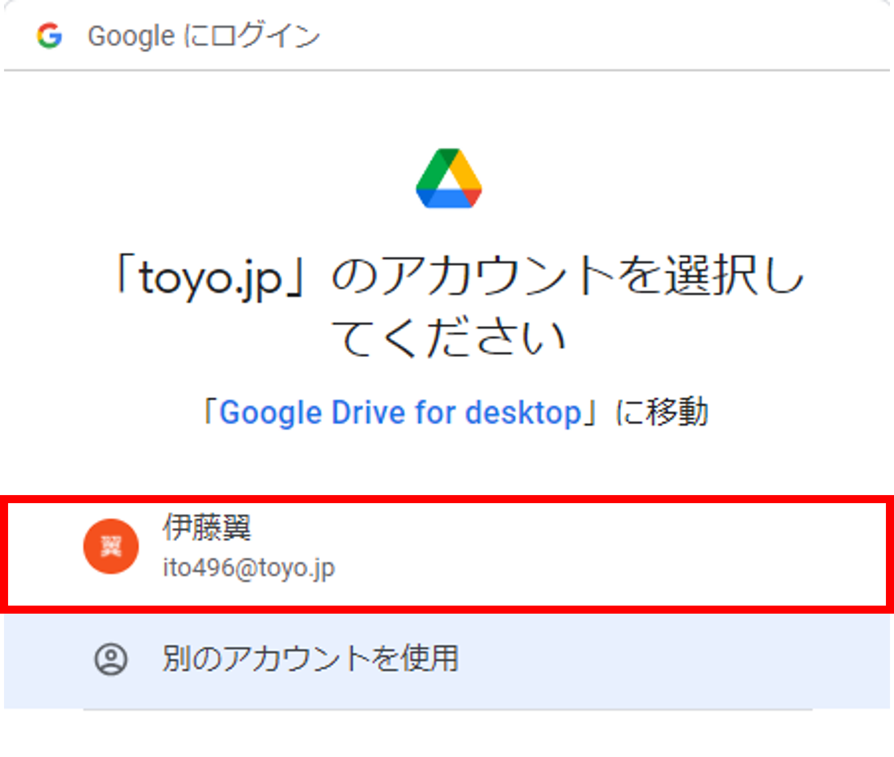
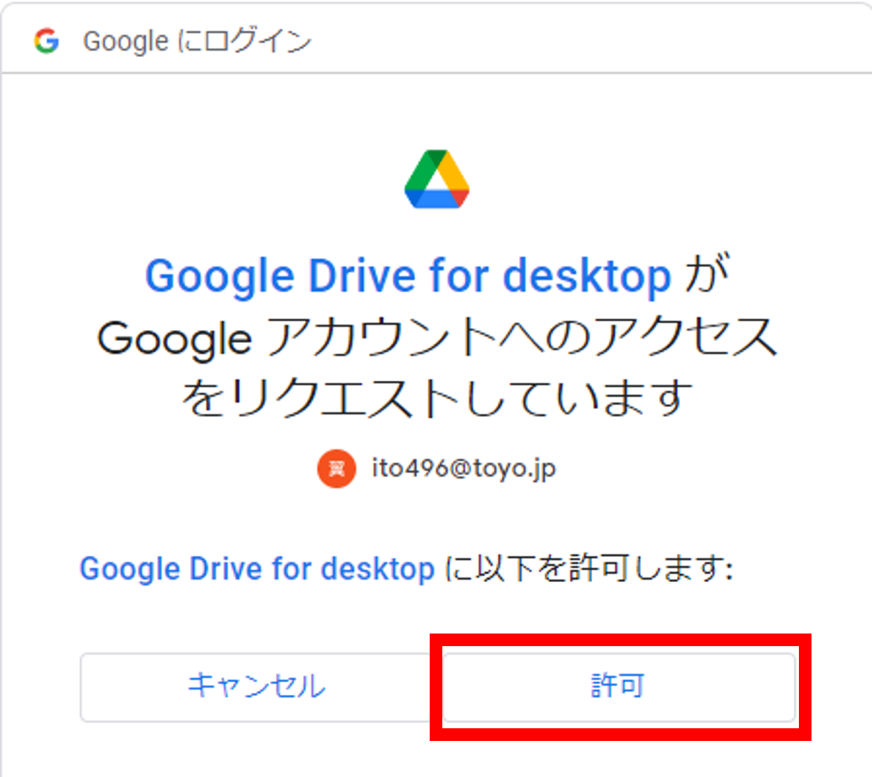
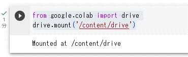
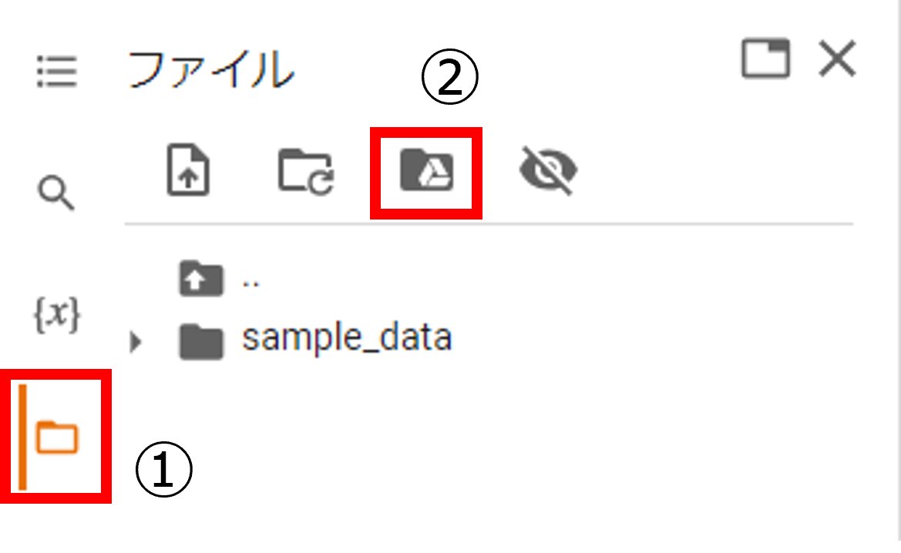
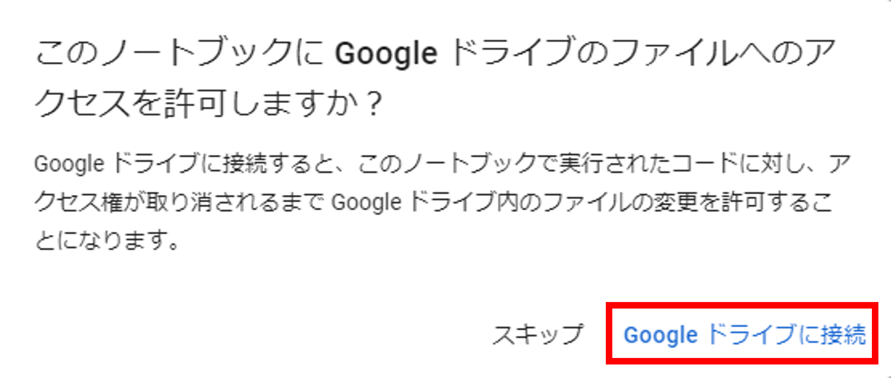
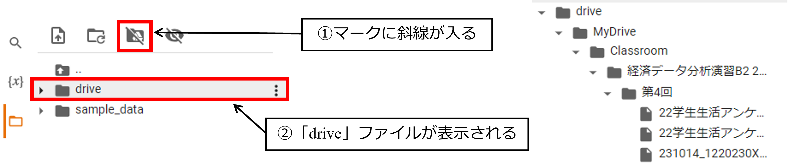
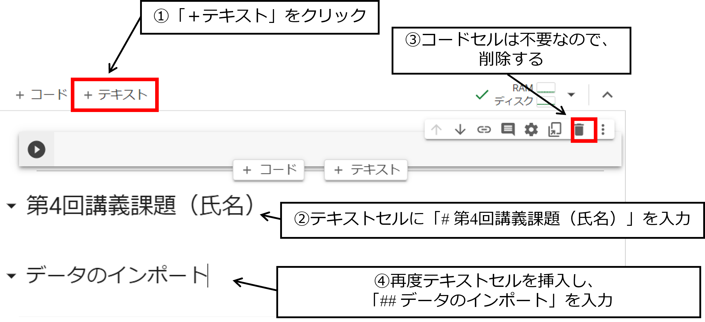
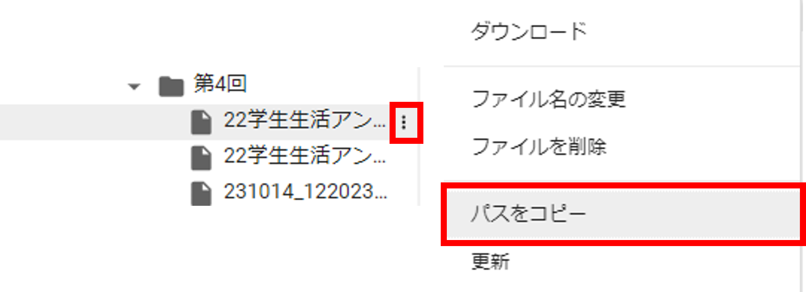

第4回 R (Colaboratory) の使い方(3)
2026年度 経済データ分析演習B2
2026-10-24
はじめに
出席登録は13:00から14:30まででに登録してください
出席番号
916460
- Google Classroomへの登録：https://classroom.google.com/c/NzkxMjEzNjY4MzEz?cjc=gsrnanuj
クラスコード
j4osjaqj
今回の目標
- ColabでDriveをマウントする（Driveのデータを使用できるようにする）
- Driveのデータをインポートする
- インポートしたデータを整理・加工できるようになる
- 加工したデータをDriveにアウトプットできるようになる
講義準備
第4回講義フォルダ作成
- Drive→Classroom→2025年度 経済データ分析演習B2に「第4回」フォルダを作成
Classroomからデータをダウンロード
- Google Classroomの第4回講義課題資料から「22学生生活アンケート.csv」と「22学生生活アンケート_変数表.xlsx」ファイルをダウンロード
- 一応、デスクトップ上の「経済データ分析演習B2」のフォルダに保存
Driveへのデータのアップロード
- Driveの「第4回」フォルダにダウンロードしたファイルをアップロードする
Colabの準備(1)
- Driveの「第4回」フォルダ上で
- 「新規」→「その他」→「Google colaboratory」をクリック

Colabの準備(2)
ファイル名の変更
- 「第4回_学籍番号_氏名.ipynb」に変更
- アンダーバー（_）は必ず半角
- 例）第4回_1220YY0XXX_伊藤翼.ipynb
- ※画像は例なので注意してください

Colabの欠点
接続時間制限
90分ルール：ノートブックの接続が切れてから90分経過でリセット
12時間ルール：ノートブックを起動してから12時間経過でリセット
つまり、Colab上に保存していたデータは消えてしまう
Google Driveをマウント
- データなどは全てDriveに保存する
- そのためにDriveにマウント（接続）する必要がある
Driveのマウント
マウント
- マウントとは、ColabからDriveに接続すること
- 方法は二つありますが、
- どちらもランタイムのタイプが「Python 3」であることが必要
Driveのマウント
ランタイムのタイプを変更する前にDriveをマウントする
マウントの方法：Python code(1)
- 以下のCodeをコードセルに入力し実行
実行
- 警告が出るので、「Googleドライブに接続」を選択
- Googleへのログインが求められるので「toyo.jp」のアカウントを選択

アクセスの許可
- アカウントへのアクセス許可を求められるので、「許可」をクリック

マウントの方法：Python code(2)
マウントの状況のチェック
- アイコン選択方法と異なり、左側のバーにファイルは表示されません
- 以下のようになっていればOK

補足：他のマウントの方法：アイコン選択(1)
driveアイコン
- 左側のファイルアイコンから
- 左側にバーを開く
- driveのアイコンをクリック

ドライブに接続
- 警告が出るので、「Googleドライブに接続」を選択

補足：他のマウントの方法：アイコン選択(2)
マウントの状況をチェック
- 左側のバーのdriveアイコンに斜線が入る
- driveファイルが表示される
- ファイルを選んでいくと「第4回」フォルダの中身が表示される

ランタイムのタイプの変更
Rへの変更
- 左上の「ランタイム」から「ランタイムのタイプの変更」を選択
- ランタイムのタイプをRに変更
- Driveへのマウントをした後にランタイムのタイプを変更しても、Driveのマウントは切れません

Colabの準備(3)
- 1 テキストセルの挿入
- 2 テキストセルに「# 第4回講義課題（氏名）」と入力
- 例）# 第4回講義課題（伊藤翼）
- 3 不要なコードセルは削除（順番入れ替えでも可）
- 4 再度テキストセルを挿入して、「## ライブラリの読み込みと呼び出し」と入力
※ 重要：日本語以外はすべて半角であることが望ましい（例えば#やスペースなど）

ライブラリの読み込み(1)
ライブラリ - 高度な関数、手法のパッケージ群
- デフォルトで入っていない関数などはインストールしないと使えない
- こうした関数などを利用するには、「パッケージ」をインストールする必要がある
| Packages | Description |
|---|---|
| R.util | Rパッケージのプログラミングや開発に役立つユーティリティ関数 |
| dplyr | 表型データの操作に特化し、データの集計などに役立つ |
| tidyverse | データの読み込み、抽出、加工、可視化など、データ分析における基本的な作業を効率的に行う |
| ggplot2 | データを可視化する、作図するパッケージ |
| gt | 表を作成するためのパッケージ |
- tidyverseにはdplyrとggplot2が含まれているので、インストールする必要はない
ライブラリの読み込み(2)
以下のCodeをコードセルに入力し実行
インストール
呼び出し
- インストール、呼び出しには時間がかかります
- 2回目以降は実行時間が少し早くなります
データのインポート
Driveのデータをインポート
- 以下のCodeをコードセルに入力し実行
# Driveに保存されているデータをdataと別名で読み込み
# データが保存されている場所のパス（住所）をダブルクォーテーションで囲む
# read.csv("ファイルパス", header = TRUE/FALSE, sep = データの区切り, fileEncoding = データの形式（文字コードの形式）)
## データの1行目にid, Q1と見出しがあるので、header = TUREとする
## csv形式でカンマ区切りであれば指定する必要ない。もし\や;などで区切られているデータは、sep = \などと指定する
## csvの文字コードがUTF-8なので、ここで指定しておく
data <- read.csv("/content/drive/MyDrive/Classroom/2026年度 経済データ分析演習B2 2026年度/演習用データ/22学生生活アンケート.csv", header = TRUE, fileEncoding = "utf-8")
# head関数は、データの先頭を出力します
head(data) id Q1 Q2 Q3 Q4 Q5 Q6 Q7 Q8 Q9
1 1 同意します ゼミⅢ 男性 21 7月 3年 経済学部 留学生ではない。 3
2 2 同意します seminar 3 女性 24 2月 3年 経済学部 留学生である。 9
3 3 同意します ゼミ3 男性 22 1月 3年 経済学部 留学生である。 7
4 4 同意します ゼミナール IIIB 男性 20 3月 3年 経済学部 留学生ではない。 8
5 5 同意します ゼミナール 女性 21 1月 4年 経済学部 留学生ではない。 8
6 6 同意します 環境リテラシーB 男性 18 3月 1年 経済学部 留学生ではない。 6
Q10 Q11 Q12 Q13 Q14 Q15
1 3 1 あまりよくない ときどきあった よくあった ときどきあった
2 9 10 まあよい ほとんどなかった 全くなかった 全くなかった
3 10 10 よい 全くなかった 全くなかった 全くなかった
4 6 7 よい 全くなかった 全くなかった 全くなかった
5 5 6 よい 全くなかった 全くなかった 全くなかった
6 8 8 まあよい よくあった 全くなかった ときどきあった
Q16 Q17 Q18 Q19
1 よくあった よくあった ときどきあった ときどきあった
2 ときどきあった ときどきあった 全くなかった 全くなかった
3 よくあった 全くなかった 全くなかった 全くなかった
4 全くなかった 全くなかった 全くなかった 全くなかった
5 全くなかった 全くなかった 全くなかった 全くなかった
6 ほとんどなかった よくあった ほとんどなかった ほとんどなかった
Q20 Q21 Q22 Q23 Q24
1 よくあった よくあった 5.0 8.0 賃貸住宅
2 全くなかった ほとんどなかった 8.0 8.0 賃貸住宅
3 全くなかった ほとんどなかった 6.0 10.0 賃貸住宅
4 全くなかった ときどきあった 5.0 5.0 持ち家(家族や親戚が所有している家)
5 ときどきあった ときどきあった 5.5 6.5 賃貸住宅
6 ほとんどなかった 全くなかった 8.0 8.0 賃貸住宅
Q25 Q26 Q27 Q28 Q29 Q30 Q31 Q32
1 7.0 2 30年以上 一人暮らし 東京都 埼玉県 両方ある
2 8.7 1 5年未満 友人 東京都 東京都 バス停
3 5.3 2 10から20年未満 寮 東京都 東京都 両方ある
4 NA NA 家族 オフィスワーク中心 千葉県 千葉県 両方ある
5 7.0 1 5年未満 一人暮らし 東京都 福島県 駅
6 6.5 1 10から20年未満 一人暮らし 東京都 山形県 両方ある
Q33 Q34 Q35 Q36 Q37 Q38 Q39 Q40 Q41 Q42
1 5 電車 30分未満 3 1 1 1 4 10 2以上3未満
2 3 電車 30分以上1時間未満 2 4 3 5 5 6 3以上4未満
3 3分 徒歩 30分未満 6 5 4 5 5 24 3以上4未満
4 5 電車 1時間以上1時間30分未満 2 4 4 4 5 7 3以上4未満
5 5 電車 30分未満 1 3 3 3 3 2 3以上4未満
6 5 電車 30分未満 5 3 4 4 2 24 4以上
Q43 Q44 Q45 Q46 Q47 Q48 Q49 Q50 Q51
1 所属していない いいえ 0 0 18 20 している 東京都
2 所属していない はい 進学前から決めていた 14 0 20 6 している 東京都
3 所属している はい 進学前から決めていた 24 24 0 10 していない
4 所属していない いいえ 5 10 6 10 している 千葉県
5 所属していない はい 就職活動 5 0 15 10 している 東京都
6 所属している はい 進学前から決めていた 10 5 10 60 している 東京都
Q52 Q53
1 飲食・フード(レストラン・居酒屋・カフェ等) 1100
2 飲食・フード(レストラン・居酒屋・カフェ等) 1100
3 NA
4 販売・接客・サービス(コンビニ・レジ・書店・ガソリンスタンド等) 1000
5 販売・接客・サービス(コンビニ・レジ・書店・ガソリンスタンド等) 1045
6 販売・接客・サービス(コンビニ・レジ・書店・ガソリンスタンド等) 1150
Q54
1 生活費のため;日常の娯楽・嗜好品のため
2 生活費のため
3
4 社会経験を養うため
5 生活費のため;学費のため;日常の娯楽・嗜好品のため
6 生活費のため;日常の娯楽・嗜好品のため;高額商品購入（自動車、パソコンなど）のため
Q55 Q56 Q57 Q58 Q59 Q60 Q61 Q62 Q63 Q64 Q65 Q66 Q67 Q68 Q69 Q70 Q71
1 8 11 70 30 0 0 10 90000 5 10 10 10 10 5 いいえ NA NA
2 8 16 50 50 25 2 0 160000 60 5 10 5 10 5 はい 1.0 5
3 NA 10 NA 80 NA NA 20 50000 50 10 0 3 0 4 はい 0.5 6
4 2 4 50 50 0 0 50 20000 20 10 30 10 10 5 はい 1.0 5
5 7 15 70 20 10 0 0 15 30 10 25 5 10 10 いいえ NA NA
6 4 4 100 4 7 50 60 4 50 30 10 20 40 0 いいえ NA NA
Q72 Q73 Q74 Q75 Q76 Q77
1 NA それ以上 twitter
2 ロールプレイング ロールプレイング 0 減らしたい それ以上 instagram
3 シミュレーション シミュレーション 0 このままでいい それ以上 instagram
4 アクション;スポーツ アクション 0 このままでいい 無制限 instagram
5 NA 無制限 instagram
6 NA 6 instagram
Q78 Q79 Q80
1 500 60 1000
2 301 0 4000
3 200 30 1000
4 150 50 1000
5 400 50 1000
6 250 60 0- データのパスとは、データが保存されている場所を示す住所です
- パスのコピーは左側からできます

データの加工(1)：基本的なこと(|>)
- はじめにデータインポートのコードセルの下に、テキストセルを挿入して、
- 「## データの加工方法」と入力しましょう
パイプ演算子: |>
- A |> Bとすることで、AとBを第1引数とする
- 異なるコードをひとまとめに実行することができます
- 以下のCodeをコードセルに入力し実行
- このままでは、dataの出力とhead関数がそれぞれ実行される
- |>でつなぐことで、dataをつかってhead関数を実行することを意味します
データの加工(2)：データの選択(filter & select)
以下のCodeをコードセルに入力し実行
行の選択：filter()
- データのフィルタリングを行います
- 変数内から必要なデータのみ抽出します
id Q1 Q2 Q3 Q4 Q5 Q6 Q7 Q8 Q9
1 1 同意します ゼミⅢ 男性 21 7月 3年 経済学部 留学生ではない。 3
2 2 同意します seminar 3 女性 24 2月 3年 経済学部 留学生である。 9
3 3 同意します ゼミ3 男性 22 1月 3年 経済学部 留学生である。 7
4 4 同意します ゼミナール IIIB 男性 20 3月 3年 経済学部 留学生ではない。 8
5 5 同意します ゼミナール 女性 21 1月 4年 経済学部 留学生ではない。 8
6 6 同意します 環境リテラシーB 男性 18 3月 1年 経済学部 留学生ではない。 6
Q10 Q11 Q12 Q13 Q14 Q15
1 3 1 あまりよくない ときどきあった よくあった ときどきあった
2 9 10 まあよい ほとんどなかった 全くなかった 全くなかった
3 10 10 よい 全くなかった 全くなかった 全くなかった
4 6 7 よい 全くなかった 全くなかった 全くなかった
5 5 6 よい 全くなかった 全くなかった 全くなかった
6 8 8 まあよい よくあった 全くなかった ときどきあった
Q16 Q17 Q18 Q19
1 よくあった よくあった ときどきあった ときどきあった
2 ときどきあった ときどきあった 全くなかった 全くなかった
3 よくあった 全くなかった 全くなかった 全くなかった
4 全くなかった 全くなかった 全くなかった 全くなかった
5 全くなかった 全くなかった 全くなかった 全くなかった
6 ほとんどなかった よくあった ほとんどなかった ほとんどなかった
Q20 Q21 Q22 Q23 Q24
1 よくあった よくあった 5.0 8.0 賃貸住宅
2 全くなかった ほとんどなかった 8.0 8.0 賃貸住宅
3 全くなかった ほとんどなかった 6.0 10.0 賃貸住宅
4 全くなかった ときどきあった 5.0 5.0 持ち家(家族や親戚が所有している家)
5 ときどきあった ときどきあった 5.5 6.5 賃貸住宅
6 ほとんどなかった 全くなかった 8.0 8.0 賃貸住宅
Q25 Q26 Q27 Q28 Q29 Q30 Q31 Q32
1 7.0 2 30年以上 一人暮らし 東京都 埼玉県 両方ある
2 8.7 1 5年未満 友人 東京都 東京都 バス停
3 5.3 2 10から20年未満 寮 東京都 東京都 両方ある
4 NA NA 家族 オフィスワーク中心 千葉県 千葉県 両方ある
5 7.0 1 5年未満 一人暮らし 東京都 福島県 駅
6 6.5 1 10から20年未満 一人暮らし 東京都 山形県 両方ある
Q33 Q34 Q35 Q36 Q37 Q38 Q39 Q40 Q41 Q42
1 5 電車 30分未満 3 1 1 1 4 10 2以上3未満
2 3 電車 30分以上1時間未満 2 4 3 5 5 6 3以上4未満
3 3分 徒歩 30分未満 6 5 4 5 5 24 3以上4未満
4 5 電車 1時間以上1時間30分未満 2 4 4 4 5 7 3以上4未満
5 5 電車 30分未満 1 3 3 3 3 2 3以上4未満
6 5 電車 30分未満 5 3 4 4 2 24 4以上
Q43 Q44 Q45 Q46 Q47 Q48 Q49 Q50 Q51
1 所属していない いいえ 0 0 18 20 している 東京都
2 所属していない はい 進学前から決めていた 14 0 20 6 している 東京都
3 所属している はい 進学前から決めていた 24 24 0 10 していない
4 所属していない いいえ 5 10 6 10 している 千葉県
5 所属していない はい 就職活動 5 0 15 10 している 東京都
6 所属している はい 進学前から決めていた 10 5 10 60 している 東京都
Q52 Q53
1 飲食・フード(レストラン・居酒屋・カフェ等) 1100
2 飲食・フード(レストラン・居酒屋・カフェ等) 1100
3 NA
4 販売・接客・サービス(コンビニ・レジ・書店・ガソリンスタンド等) 1000
5 販売・接客・サービス(コンビニ・レジ・書店・ガソリンスタンド等) 1045
6 販売・接客・サービス(コンビニ・レジ・書店・ガソリンスタンド等) 1150
Q54
1 生活費のため;日常の娯楽・嗜好品のため
2 生活費のため
3
4 社会経験を養うため
5 生活費のため;学費のため;日常の娯楽・嗜好品のため
6 生活費のため;日常の娯楽・嗜好品のため;高額商品購入（自動車、パソコンなど）のため
Q55 Q56 Q57 Q58 Q59 Q60 Q61 Q62 Q63 Q64 Q65 Q66 Q67 Q68 Q69 Q70 Q71
1 8 11 70 30 0 0 10 90000 5 10 10 10 10 5 いいえ NA NA
2 8 16 50 50 25 2 0 160000 60 5 10 5 10 5 はい 1.0 5
3 NA 10 NA 80 NA NA 20 50000 50 10 0 3 0 4 はい 0.5 6
4 2 4 50 50 0 0 50 20000 20 10 30 10 10 5 はい 1.0 5
5 7 15 70 20 10 0 0 15 30 10 25 5 10 10 いいえ NA NA
6 4 4 100 4 7 50 60 4 50 30 10 20 40 0 いいえ NA NA
Q72 Q73 Q74 Q75 Q76 Q77
1 NA それ以上 twitter
2 ロールプレイング ロールプレイング 0 減らしたい それ以上 instagram
3 シミュレーション シミュレーション 0 このままでいい それ以上 instagram
4 アクション;スポーツ アクション 0 このままでいい 無制限 instagram
5 NA 無制限 instagram
6 NA 6 instagram
Q78 Q79 Q80
1 500 60 1000
2 301 0 4000
3 200 30 1000
4 150 50 1000
5 400 50 1000
6 250 60 0列の選択：select()
- データ内の必要な変数のみを抽出します
- つまり、いらない変数を除きます
データの加工(3)：列の変換(mutate)
列の変換：mutate()
- 既存の列の中身を書き換えます
- mutate()の括弧内には、「変数の名前＝ベクトル」とします
条件指定：if_else(条件, TRUE, FALSE)
- 条件付きの関数
- 条件を指定して、真の場合とそうでない場合を書きます
データの加工(4)：列の追加(mutate)
列の追加：mutate()
- 新たに変数を追加するときも使用
- 出来るだけもともとのデータは変更しないで新しい列（変数）を追加していく
- 変数名を考えて指定します
データの加工(5)：条件指定(if_else & case_when)
単一条件指定：if_else(条件, TRUE, FALSE)【再】
複数条件指定：case_when(条件1 ~ TRUE, 条件2 ~ TRUE, …)
- 複数の条件を指定する関数
- 条件を指定して、真の場合は”~“の右側に真の値を指定します
- カンマ”,“で区切り、他の条件を追加します
- 最後は、左側にTRUEとして、“~”の右側にこれまで条件を満たさない場合の値を指定
データの加工(6)：|>でつなげばすべて実行
- これまでのコードを|>でつなげばすべて実行できる
- ただし、コードは上からの順番に実行されるので注意
# アンケートに同意しているサンプルのみに限定
# 女性を1、男性を0とするダミー変数を作成（変数名：dum_female）
# 経済学部を1、それ以外を0とするダミー変数を作成（変数名：dum_econ）
# 学年を数値型に変更する（変数名：cat5_grade）
# 必要な変数のみ残す
# 最後に先頭行のみを表示して確認
data |>
filter(Q1=="同意します") |>
mutate(dum_female = if_else(Q3 == "女性", 1, 0)) |>
mutate(dum_econ = if_else(Q7 == "経済学部", 1, 0)) |>
mutate(cat5_grade = case_when(Q6 == "1年" ~ 1,
Q6 == "2年" ~ 2,
Q6 == "3年" ~ 3,
Q6 == "4年" ~ 4,
TRUE ~ 5)) |>
select(id, Q3, Q6, Q7, dum_female, dum_econ, cat5_grade) |>
head() id Q3 Q6 Q7 dum_female dum_econ cat5_grade
1 1 男性 3年 経済学部 0 1 3
2 2 女性 3年 経済学部 1 1 3
3 3 男性 3年 経済学部 0 1 3
4 4 男性 3年 経済学部 0 1 3
5 5 女性 4年 経済学部 1 1 4
6 6 男性 1年 経済学部 0 1 1加工データの作成
- テキストセルを挿入して、「## 加工したデータの作成と書き出し」と入力
- これまでの実行は、実際にdataの加工をしているわけではなく、操作しているだけ
- 加工したデータを新しいオブジェクトとして作成する(“新しいデータ名 <- データ加工”)
- 先ほどの加工したデータを”data2”として作成
# data2に加工したデータを代入
data2 <- data |>
filter(Q1=="同意します") |>
mutate(dum_female = if_else(Q3 == "女性", 1, 0)) |>
mutate(dum_econ = if_else(Q7 == "経済学部", 1, 0)) |>
mutate(cat4_grade = case_when(Q6 == "1年" ~ 1,
Q6 == "2年" ~ 2,
Q6 == "3年" ~ 3,
Q6 == "4年" ~ 4,
TRUE ~ 5)) |>
select(id, Q3, Q6, Q7, dum_female, dum_econ, cat4_grade)
head(data2) id Q3 Q6 Q7 dum_female dum_econ cat4_grade
1 1 男性 3年 経済学部 0 1 3
2 2 女性 3年 経済学部 1 1 3
3 3 男性 3年 経済学部 0 1 3
4 4 男性 3年 経済学部 0 1 3
5 5 女性 4年 経済学部 1 1 4
6 6 男性 1年 経済学部 0 1 1ファイルの書き出し：csvファイルへの書き出し
- 新しく作成したデータをcsvに書き出す
- 書き出したデータはマウントしているDriveに保存されます
- パスを指定すれば、そのフォルダに書き出してくれる
- このcsvファイルは提出しないので、注意してください。
講義課題（次ページ有）
第4回講義課題(1) - 以下の加工をしたデータを書き出して、そのcsvを提出してください
- テキストセルを挿入して、「## 第4回講義課題」と入力
- コードセルを挿入して、以下のコードをすべて一つのセルでまとめる
- 新しいデータオブジェクトの名前は「df」とする
- filter関数を使用して、アンケートに同意しているサンプルのみとする
- 女性を1、男性を0、経済学部を1、それ以外を0とするダミー変数を作成
- 名前はそれぞれ、dum_female, dum_econとする
- 留学生を1、それ以外を0とするダミー変数をdum_exstudとして作成
- 学年、誕生月を数値型に変換した変数を作成
- 名前はそれぞれ、cat5_grade, cat12_birthとする
- 健康状態を「よい」1から「よくない」5とするカテゴリー変数をcat5_healthとする
- select関数を使って、idと作成した変数のみを選んでください
講義課題
- 新しく作成したデータのdfをcsvファイルとして、Driveの第4回フォルダに書き出す
- 書き出すファイル名は”第4回_学籍番号_氏名.csv”としてください
- 書き出したcsvファイルを第4回講義課題(1)に提出してください
第4回講義課題(2) - Colabのファイルを提出してください
- 今回作成したColabファイルを第4回講義課題(2)に提出
- ファイル名が”第4回_学籍番号_氏名.ipynb”となっているか確認してください
- 注意：二つ提出が必要です。提出場所を間違えないようにしてください